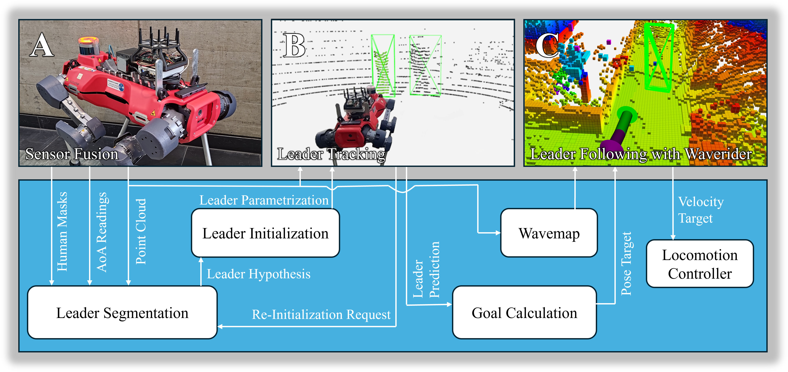

Personal mobile robotic assistants are expected to find wide applications in industry and healthcare. For example, people with limited mobility can benefit from robots helping with daily tasks, or construction workers can have robots perform precision monitoring tasks on-site. However, manually steering a robot while in motion requires significant concentration from the operator, especially in tight or crowded spaces. This reduces walking speed, and the constant need for vigilance increases fatigue and, thus, the risk of accidents. This work presents a virtual leash with which a robot can naturally follow an operator. We use a sensor fusion based on a custom-built RF transponder, RGB cameras, and a LiDAR. In addition, we customize a local avoidance planner for legged platforms, which enables us to navigate dynamic and narrow environments. We successfully validate on the ANYmal platform the robustness and performance of our entire pipeline in real-world experiments.

The presented pipeline consists of three main elements: the sensor fusion (A), leader tracking (B), and leader following (C). We combine measurements from the onboard cameras and LiDAR unit of the robot with an additional custom Angle of Arrival sensor unit. From these measurements, we segment our leader out of the scene, which may involve other people. Using an EKF, we track the leader’s motion, which allows us to keep track of them, even when occluded. By adding a new waverider policy for dynamic obstacles, the robot can follow the leader through crowded spaces, avoiding collision with both the environment and (potentially moving) other people.
Please refer to chapters III to V of the paper for a deatailed description of the novel sensor setup and the full software stack.
We deploy our pipeline on the ANYmal robot and perform leader-following tests in multiple scenarios to validate our approach. Additionally, within the paper, we provide quantitative or qualitative evaluations for the individual components of our pipeline.
In this paper we have presented a end-to-end pipeline for a quadrupedial robot, enabling it to follow a human leader through dynamic environments. The solution is minimally invasive for the human operator, as it only requires them to carry a lightweight, pocket-sized transmitter beacon. Robust multi-sensor fusion allows us to navigate both in open spaces and through moving crowds, without loosing track of the operator. Our system enables robots to move into more commonplace settings, as it reduces the burden of operator training. This is particularly interesting for personal assistance robots, such as those that could extend the mobility of people with disabilities or for applications where robots assist in the inspection of industrial sites.
@article{scheidemann2024leaderfollowing,
title={Obstacle-Avoidant Leader Following with a Quadruped Robot},
author={Carmen Scheidemann and Lennart Werner and Victor Reijgwart and Andrei Cramariuc
and Joris Chomarat and Jia-Ruei Chiu and Roland Siegwart and Marco Hutter},
booktitle={2025 IEEE International Conference on Robotics and Automation (ICRA)},
year={2024},
month={October}
}